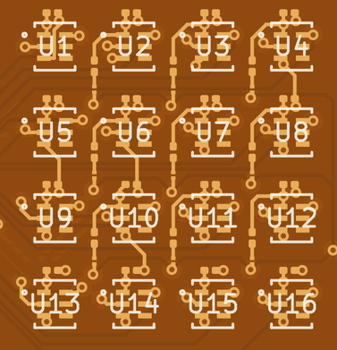
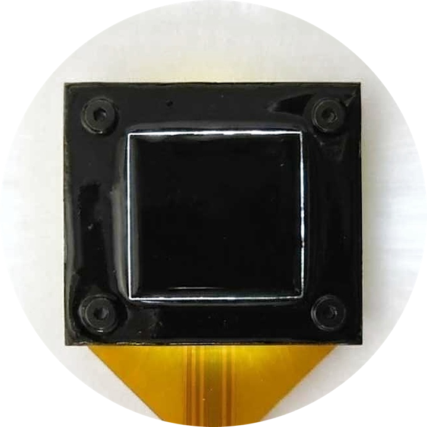
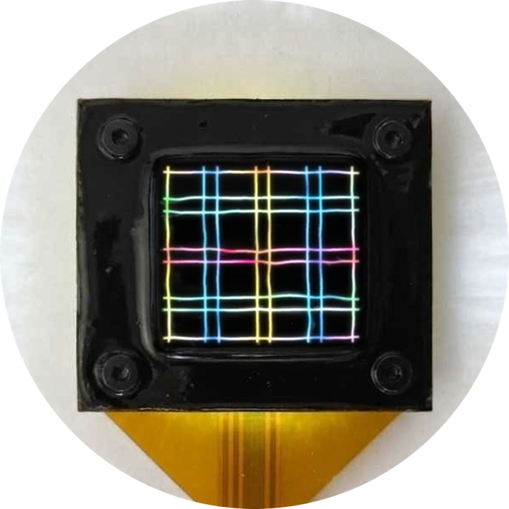

Optical tactile array with per-taxel shear sensing
LuxTac
A Thin, Scalable, and Open-Source Optical Taxel Array with Distributed Three-Axis Force Sensing for Tactile Robot Learning


Scalablesame cell tiles to 8×4, 8×8, …
R² = 0.999linear to force
104 mNdetection threshold
63.3% vs 36.7%average robot success, with vs without touch